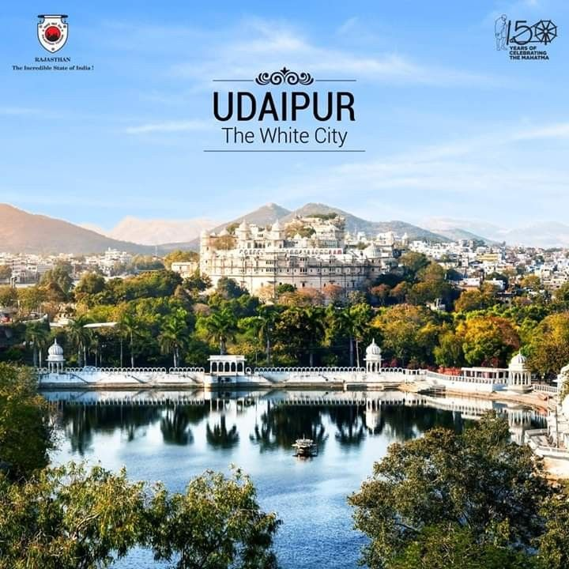
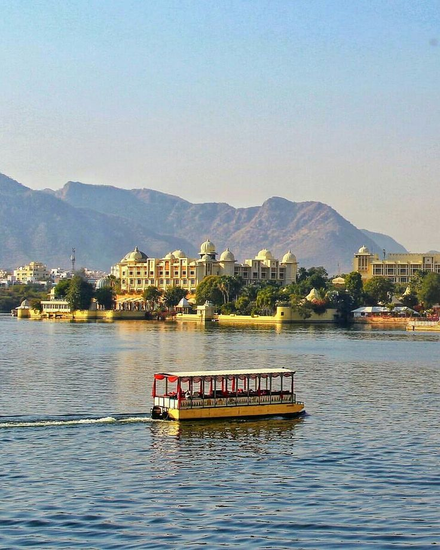
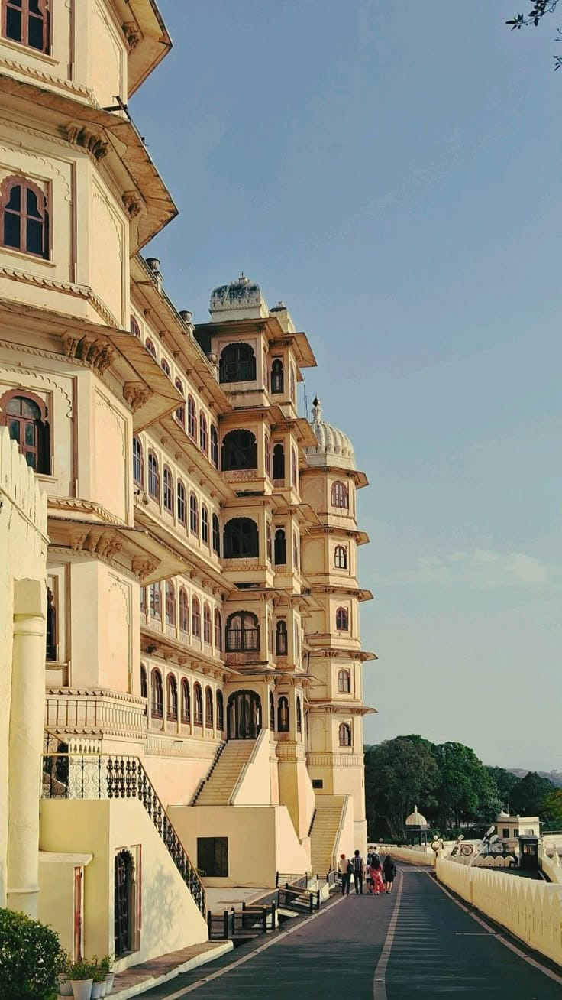
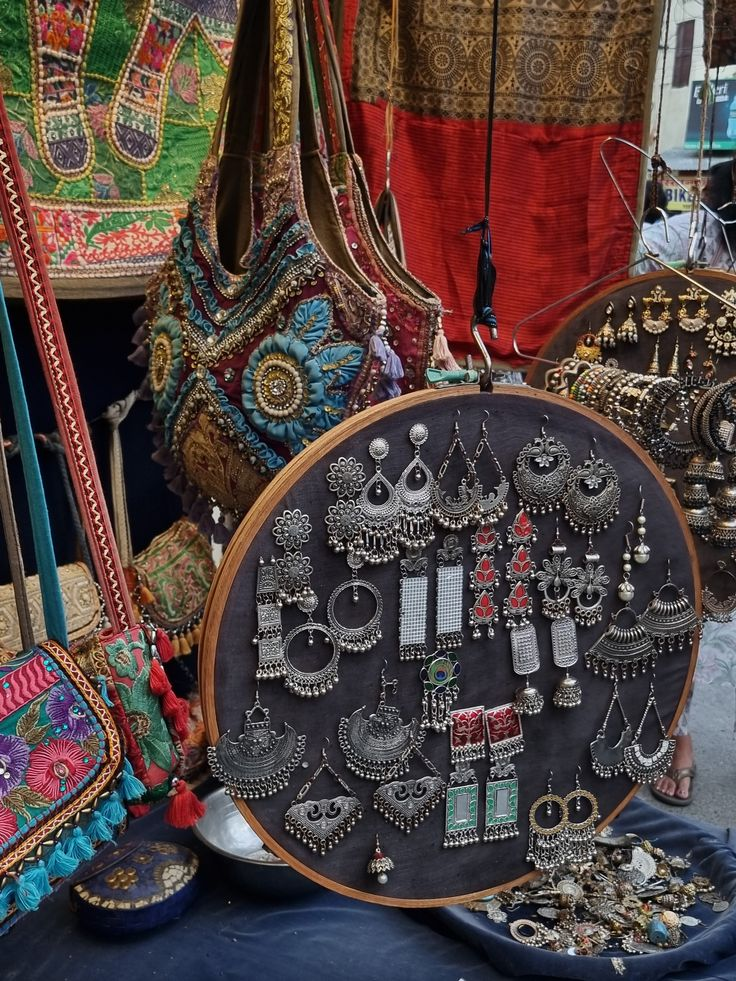
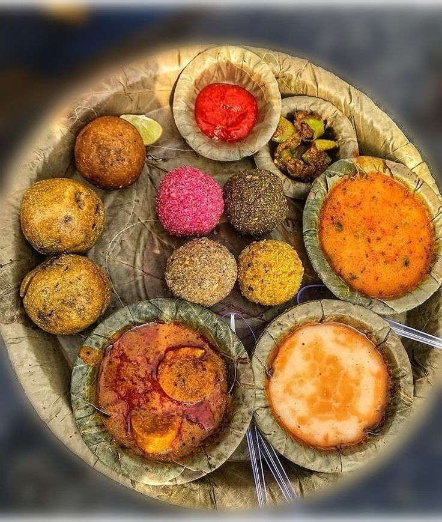

Famous Festival (Mewar Festival)
The Mewar Festival is celebrated in Udaipur to welcome spring. It features cultural performances, processions, and rituals, showcasing the traditions of the Mewar region.

Udaipur Over_all View
Udaipur, known as the “City of Lakes,” is one of the most romantic destinations in India. Surrounded by the Aravalli Hills, it is famous for its palaces, lakes, and vibrant culture, offering a perfect blend of history and natural beauty.
Peaceful Nature Spot (Lake Pichola)
Lake Pichola is a serene water body in Udaipur, surrounded by palaces and ghats. Boat rides here offer stunning views of the City Palace and Jag Mandir, making it a peaceful and picturesque spot.


Historical Place (City Palace)
The City Palace of Udaipur is a magnificent complex overlooking Lake Pichola. Built by the Mewar dynasty, it showcases Rajput architecture, courtyards, and museums that narrate the royal history of Udaipur.
Local Market (Hathi Pol Bazaar)
Hathi Pol Bazaar is a lively market known for traditional paintings, handicrafts, and souvenirs. It reflects the artistic spirit of Udaipur and is a favorite among tourists for shopping.

Famous Festival (Mewar Festival)
The Mewar Festival is celebrated in Udaipur to welcome spring. It features cultural performances, processions, and rituals, showcasing the traditions of the Mewar region.
Famous Local Food Items (Meals → Dal Baati Churma)
Dal Baati Churma is a signature Rajasthani dish enjoyed in Udaipur. Crispy baatis with spicy dal and sweet churma make a wholesome and flavorful meal.
